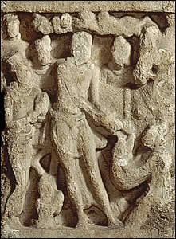

The Great Departure
Once Prince Siddhartha had seen suffering in the world outside the palace walls, he vowed to go out and seek a greater understanding of the world. Siddhartha left the palace in the middle of the night with his horse Kanthaka and his groom Chandaka. At the city gate, Siddhartha took off his princely robes and cut his hair. He sent his groom and horse back to the palace. Then he began his journey alone.This scene shows Siddhartha saying goodbye to his horse and groom. |